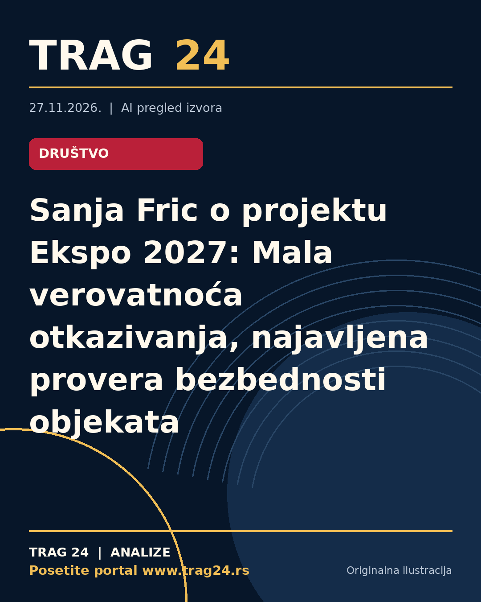

Sanja Fric o projektu Ekspo 2027: Mala verovatnoća otkazivanja, najavljena provera bezbednosti objekata

ŠTA SE DOGODILO
Sanja Fric, narodna poslanica Studentske liste i profesorka Građevinskog fakulteta, izjavila je da je mala verovatnoća da će međunarodna specijalizovana izložba Ekspo 2027 u Beogradu biti otkazana. Ona je najavila da će biti izvršena provera bezbednosti objekata namenjenih masovnoj upotrebi i naglasila da je Ekspo međunarodna obaveza Srbije koju je država preuzela.
HRONOLOGIJA
Prethodnih nekoliko meseci, kako navodi Fric, dinamika realizacije projekta Ekspo je ugrožena, a stanje nije nastalo tek u poslednjih mesec dana. Nakon parlamentarnih izbora sprovedeni su zakonski koraci kao što su potvrđivanje mandata i konstituisanje Skupštine, dok je u toku formiranje skupštinskih odbora i donošenje zakona o ministarstvima, što prethodi formiranju nove vlade. Ministarstvo finansija priprema sveobuhvatan izveštaj o realizaciji projekta Ekspo 2027, koji će biti prosleđen skupštinskoj većini na razmatranje.
ŠTA NAVODE IZVORI
Fric je u intervjuima za Insajder i različite medije istakla da nova vlast ima cilj da projekat vrati u zakonske okvire i proveri bezbednost objekata za masovnu upotrebu. Ona je odbacila tvrdnje ministra finansija u tehničkom mandatu Siniše Malog da Studentska lista treba da donese odluku o održavanju izložbe, navodeći da ta lista još nije preuzela izvršnu vlast. Fric je takođe objasnila da postoje mnogi infrastrukturni projekti vezani za plan za 2027. godinu koji nisu direktno deo same izložbe, te da se fokus treba usmeriti na objekte neophodne za Ekspo. Navodi da već postoji tim stručnjaka koji će analizirati podatke kako bi se procenila bezbednost čim dobiju kompletnu dokumentaciju i građevinske dnevnike.
ŠTA JE POTVRĐENO
Potvrđeno je da Ekspo 2027 jeste međunarodna obaveza Srbije i da je novi državni cilj usklađivanje sa zakonskim normama, naročito u oblasti bezbednosti objekata. Ministarstvo finansija priprema izveštaj o toku realizacije koji će biti prosleđen Vladi i skupštinskoj većini. Fric je potvrdila da postoji složen tim stručnjaka spreman za analizu i ocenu bezbednosti infrastrukturnih objekata. Takođe je potvrđeno da proces formiranja nove vlade nije završen i da Studentska lista još nema izvršne nadležnosti.
ŠTA NIJE POTVRĐENO
Nije potvrđeno da će biti otkazana izložba Ekspo 2027, već je navedeno da je ta mogućnost mala. Nisu precizirani detalji o rokovima ili konkretnim rezultatima pripremljenih izveštaja i pregleda bezbednosti. Nije poznato da li će i na koji način biti raskinuti ugovori u građevinskim projektima vezanim za Ekspo, jer se svaki predmet pojedinačno razmatra.
ŠTA OSTАJE OTVORENO: Ostaje neizvesno kako će nova vlada precizno upravljati projektom Ekspo 2027, posebno u segmentima kontrole i usklađivanja sa zakonskim propisima. Nije poznato koliko vremena i resursa će biti potrebno za završnu proveru bezbednosti objekata pre samog početka izložbe. Takođe, ostaje otvoreno pitanje koji će konkretni infrastrukturni projekti biti prioritetizovani u narednom periodu, kao i kakve izmene prostornog plana i zakonskih rešenja će biti sprovedene.
Izvori
- https://www.espreso.co.rs/vesti/politika/1632201/sanja-fric-o-projektu-ekspo
- https://www.kurir.rs/vesti/politika/10175165/ekspo-2027-provera-bezbednosti-objekata-sanja-fric
- https://www.danas.rs/vesti/ekonomija/fric-ekspo-je-medjunarodna-obaveza/
Ova analiza je pripremljena uz pomoć veštačke inteligencije na osnovu javno dostupnih izvora. Navodi izvora nisu nužno nezavisno potvrđeni.